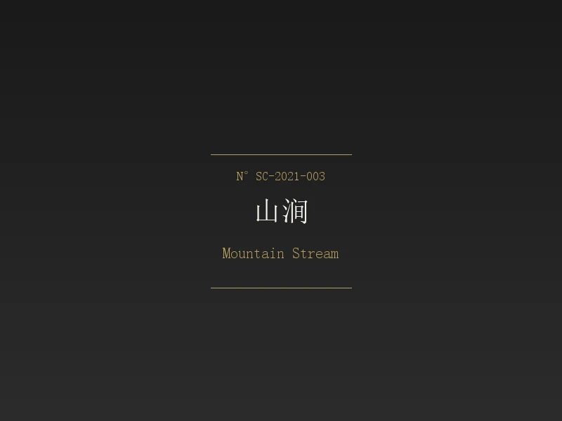

Mountain Stream

以宝兴大理石和锈铁两种材料构建，大理石的洁白与锈铁的暗红形成强烈对比。如同山间溪流切开裸露的岩层，时间在两种材质上留下完全不同的痕迹。
Constructed from Baoxing marble and rusted iron — the marble's pure white contrasting starkly with the iron's dark rust. Like a mountain stream cutting through exposed strata, time leaves radically different marks on the two materials.
山涧
Zhao Yanqing · Handcrafted Unique Piece
Mountain Stream
Handcrafted by Zhao Yanqing · Unique Piece
Materials: Baoxing Marble · Rusted Iron
Year: 2021
老赵说，山涧是最诚实的自然形态——水往低处流，石往深处裂，谁也不迁就谁。这件作品他只用了一天就确定了构图，但找了两个月才找到对的那块锈铁——锈得刚刚好，不多不少，就像山涧边的岩石被水汽浸了几百年。
Zhao says mountain streams are nature's most honest form — water flows downward, rock splits deeper, neither compromises. He settled the composition in one day, but spent two months finding the right piece of rusted iron — rusted just enough.